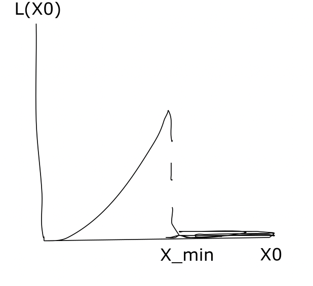
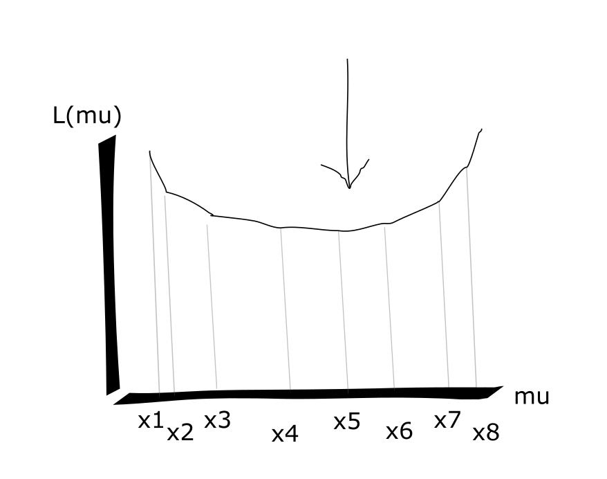

Chapter 8 in Book
Maximum Likelihood Estimators are another way to get an estimtor. It has a guarentee that the MLE estimator variance is "smallest" over all possible estimators.
We opften maximize the log likelihood instead of the raw likelhood to change multiplucation into addition.
Def: Likelihood is the joint distribution of all the data points, given all the parameters.
Ex) If X1,...,Xn∼iidf(⋅) each with prob f(x|θ),
Then the likelihood f(x1,...,xn|θ)=∏ni=1f(xi|θ)=L(θ), assuming, as before, that the points are iid. Note that in general the points are not iid, so we should use the generalized functional form f(x1,...,xn|θ).
The function L(θ) is the likelihood function of θ given observed data x1,...,xn.
Examples of Maximum Likelihood Estimator Computation
Ex1: Poisson Random Variable
Given X1,...,Xn∼iidPoisson(λ);f(xi)=e−λλxixi!.
Since the xi are iid, we can write the maximum likelihood and the maximum log likelihood computation as
maxλL(λ)maxλlogL(λ)maxλlogL(λ)∂logL(λ)∂λ=0=maxλ∏i=1ne−λλxixi!=maxλ∑i=1n[−λ+xilogλ−log(xi!)]=maxλ[−nλ+logλ∑i=1nxi−∑i=1nxilog(xi!)]⟹−n+∑ni=1xiλ=0⟹λ=1n∑i=1nxi⟹λ̂ =1n∑ni=1Xi
where in the last step we switch out
xi for
Xi, since we do not observe values of
xi directly, rather
xi is drawn from the random process
Xi, and we switch out
λ for
λ̂ , since it is now an estimator.
Ex2: Normal Distribution
Given X1,...,Xn∼iidN(μ,σ2);f(xi)=12πσ2√e−12(x−μσ)2.
To compute the MLE we do:
maxμ,σlogL(μ,σ2)∂∂μ=0⟹∂∂σ2=0⟹⟹σ2=∑i=1n[−12log2π−12logσ2−12σ2(xi−u)2]=−n2log2π−n2logσ2−12σ2∑i=1n(xi−μ)21σ2∑i=1n(xi−μ)=0⟹μ=1n∑i=1n(xi)⟹μ̂ =1n∑ni=1(Xi)=X¯−n2σ2+12σ4∑i=1n(xi−μ)2=0⟹−n+1σ2∑i=1n(xi−μ)2=0=1n∑i=1n(xi−μ)2⟹σ̂ 2=1n∑i=1n(Xi−μ̂ )2⟹σ̂ 2=1n∑ni=1(Xi−X¯)2
Ex3: Gamma Distribution
Given X1,...,Xn∼iidGamma(α,λ);f(xi)=λαΓ(α)xα−1ie−λxi;xi≥0
To compute the MLE we do:
maxα,λlogL(α,λ)∂∂λ=0∂∂α=0=nαlogλ−nlog(Γ(α))+(α−1)∑i=1nlog(xi)−λ∑i=1nxi⟹α̂ nλ̂ −∑i=1nXi=0⟹λ̂ =α̂ /X¯⟹nlogλ̂ −nΓ′(α̂ )Γ(α̂ )⏟digamma function+∑i=1nlog(xi)=0
We have no closed form solution for
α̂ . There are some methods to estimate
α̂ asymptotically or my simulation:
- Bisection Method (asymptotic) - If we are given that your distribution function is log concave, then it has a unique optimum which is a maximizer. The log likelihood first goes up, then goes down as α increases, that is, the derivative ∂L/∂α is monotomic decreasing and crosses at the zero mark exactly once. So we can take a small α and a big α, take their average, and if ∂L/∂α>0 we look to points to the right of the average, if <0 we look to points to the left of the average.
- Newton's Method (asymptotic) - Start with g′,g″ and some initial value α0. On each Newton update step, update αi+1=αi+g′(αi)g″(αi) until convergence.
- Bootstrap (simulation) - While the above methods will allow approximation of α̂ , the bootstrap or other sampling methods are necessary to get the full sampling distribution of α̂ .
Ex4: Pareto Distribution - When Taking Derivatives Doesn't Work
Ordinary Max log likelihodo does not work for discontinuous probability functions like the Pareto.
Given X1,...,Xn∼iidPareto(θ,x0), where θ is a known parameter and θ>1, and
f(xi)={θxθ0x−θ−1i0if xi≥x0 otherwise
Ordinary Max log likelihood does not work for discontinuous probability functions like the Pareto. If we tried to take the ∂∂x0 with regard to the written log likelihood function logL(x0)=nlogθ+θnlogx0−(θ+1)∑ni=1logxi, we get ∂∂x0=θnx0=0⟹x0=∞, which is clearly absurd.
The issue is that we didn't take into account our discontinuous jump when we wrote our likelihood. Instead we need to write f(xi)=θxθ0x−θ−1iI{xi≥x0} where I is an indicator variable.
Then we have
L(x0)===∏i=1nθxθ0x−θ−1iI{xi≥x0}θnxnθ0(∏i=1nx−θ−1i)(∏i=1nI{xi≥x0})θnxnθ0(∏i=1nx−θ−1i)I{xmin≥x0}
We can now solve the function piecewise, given that its shape looks something like this

Ex 5: Double Exponential (Piecewise Linear Functions)
Given X1,...,Xn∼iidDoubleExponential(μ) where f(xi)=12e−12|xi−μ|,
To compute the MLE, we do
maxμlogL(μ)=nlog(12)−12∑i=1n|xi−μ|
So we essentially want to find
minμ∑i=1n|xi−μ|=minμ∑i:xi≥μ(xi−μ)+∑i:xi<μ(μ−xi)==minμμ[#{i:xi<μ}−#{i:xi≥μ}]+∑i:xi≥μxi−∑i:xi<μxi
This is a piecewise connected linear function in
μ.

The minimum of this function is where the slope turns from negative to positive, that is where
#{i:xi<μ}=#{i:xi≥μ} - that is, at the median! So we have
μ̂ =median(Xi).
Ex 6.1: Multinomial Distribution 1 - Maximum Likelihood where x1,x2,x3,.. are not independent
In cases where the data points are not independent of each other, we have to do a full optimization using the full funcutonal form, and turn the contstraints (dependency) into a Lagrangian.
Suppose we have data points x1,...,xk drawn from a mulitnomial distribution with k events and n trials, so f(x1,...,xk)=n!x1!⋯xk!px11⋯pxkk;∑kipi=1,∑kixi=n
(That is, have k urns and n balls, and x1,...,xk are the number of balls in each urn. The constraint here is that x1+...+xk=n. Note that we have to use the full functional form f(x1,...,xk) and not f(xi) because the xi are not independent.
To fine the MLE over p1,...,pk, we do
f(x1,...,xk)maxp1,...,pklogL(p1,...,pk)ℒ(p1,...,pk,λ)∂ℒ∂pj=xjp̂ j−λ=0=n!x1!⋯xk!const wrt p, so ignorepx11⋯pxkk=maxp1,...,pk∑i=1klogpis.t.∑i=1kpi=1=∑i=1kxilogpi−λ(∑i=1kpi−1)⟹xjλ=p̂ j⟹∑ki=0xjλ=1⟹λ=n⟹p̂ k=xkn
Ex 6.2: Multinomial Distribution 2 - Hardy Weinburg Distribution - x1,x2,x3,.. are not independent
Suppose we have three traits x1,x2,x3 parameterized by θ, and distributed as follows: x1:(1−θ)2, x2:2θ(1−θ), x3:θ2.
We estimate the MLE for θ as follows:
logL(p1,p2,p3)logL(θ)∂logL(θ)∂θ=x1logp1+x2logp2+x3logp3=x12log(1−θ)+x2(log2+logθ+log(1−θ))+2x3logθ=log(1−θ)[2x1+x2]+log(θ)[x2+2x3]+x2log2=−2x1+x21−θ̂ +x2+2x3θ̂ =0⟹θ̂ =x2+2x32(x1+x2+x3)
We also have to
check the second order conditions to make sure that this is indeed a maximum and not a minimum.
Note that in this model and other multinomial models, x1,x2,x3,... are not indepdent, so we can't use the bootstrap!
Maximum Likelihood Estimators: Asymptotics and Guarentees
Maximum likelihood estimators are so widely used because they are asymptotically normally distributed and in some sense with the smallest variance of any estimator. We write:
n‾√(θ̂ −θ)→dN(0,1I(θ))
This doesn't imply the MLE is unbiased - only that asymptotically it is mean close to
θ and normal with variance as the "information"
1/I(θ). The proof of this is in the lecture 11 course notes.
Asymptotic Variance and Information
Define: Information I(θ)
If X1,...,Xn∼iidf(⋅;θ), then we define
I(θ):=𝔼[(∂∂θlogf(x;θ))2]=−𝔼[∂2∂θ2logf(x;θ)]
Ex) x∼N(μ,σ2). Suppose σ2 is known. Compute I(μ).
f(x;μ)=12πσ2√e−12(x−μσ)2, so
logf(x;μ)=−12log2π−logσ−12σ2(x−u)2
∂∂ulogf(x;μ)=1σ2(x−u)
I(μ)=𝔼[(∂∂ulogf(x;μ))2]=𝔼[1σ4(x−u)2]=1σ4𝔼[(x−u)2]=1σ4σ2=1σ2
Therefore, the asymptotic variance of the MLE estimator for the mean of the normal distribution, as we take more and more data points to estimate from, is 1/I(μ)=σ2. [We could also have done this derivation using the second derivative form of I(θ).
Asymptotic Variance and Aproximate Confidence Interval of MLE estiamtes
Since we have that n‾√(θ̂ −θ)→dN(0,1I(θ)), we can derive an approximate condifernece intermal of the MLE estimate from the asymptotic variance (information). This forks for all cases - differentiable, continuous, or discontinuous probability functions. Generally just use 2.5\hat \theta$.
Ex) Bernoulli - Asymptotic Variance
Given X1,...,Xn∼iidBernoulli(p)f(xi)=P(Xi=xi)=pxi(1−p)1−xi;xi=0,1
we have
logL(p)=logp(∑ni=1xi)+log(1−p)(∑ni=1(1−xi))
∂∂p=0⟹(∑ixi)/p−(n−∑ixi)/(1−p)=0=⟹p̂ =∑ixin
This tends to N(p,p(1−p)n) by CLT.
We can check using the Information:
∂2/∂p2In(p)=−∑ixip2−n−∑ixi(1−p)2=−𝔼[∂2/∂p2logL(p)]=𝔼[∑ixip2+n−∑ixi(1−p)2]=∑iE[xi]p2+n−∑iE[xi](1−p)2=npp2+n(1−p)(1−p)2=np(1−p)
This means that the asymptotic variance is
1/In(p)=p(1−p)n, as expected.
Ex) Gamma - Asymptotic Variance
Given X1,...,Xn∼iidGamma(α,λ);f(xi)=λαΓ(α)xα−1ie−λxi;xi≥0
From above,
logL(α,λ)∂∂α=0=nαlogλ−nlog(Γ(α))+(α−1)∑i=1nlog(xi)−λ∑i=1nxi⟹nlogλ̂ −nΓ′(α̂ )Γ(α̂ )⏟digamma function+∑i=1nlog(xi)=0
Def: Digamma Function ψ(α)=Γ′(α̂ )Γ(α̂ )=ddαlogΓ(α)
Def: Triigamma Function ψ′(α) is the derivative of the digamma function.
Note that
∂2∂α2=∂∂α(−nψ(α))=−nψ′(α). Thus,
In(α)=nψ′(α).
Our 95% confidence interval for
α, then, is asymptotically
α̂ ±1.961nψ′(α̂ )‾‾‾‾‾‾√.
Maximum Likelihood - Efficiency
The Maximum Likelihood Estimator is the most efficient (lowest variance) amongst unbiased estimators for a statistic. This is known as the Cramer-Rao Lower Bound.
A bit more formally, suppose X1,...,Xn∼iidf(⋅|θ). An estimator θ̂ is any function of our data θ̂ =t(x1,...,xn).
Early statisticians always tried to find minimum MSE (Mean Square Error) Estimators. They were unsuccessful, so they focused only on unbiased estimators, and focused on finding minimum variance estimators. Recall that MSE(θ̂ )=Var(θ̂ )+bias(θ̂ )2.
The Cramer-Rao Lower Bound states:
Suppose X1,...,Xn∼iidf(⋅|θ), and θ̂ is any unbiased estimator for θ, θ̂ =t(x1,...,xn). Then Var(θ̂ )>1In(θ) where 1In(θ) is the asymptotic variance of the Maximum Likelihood Estimator.
The derivation is in Chapter 14 of your version of the course notes.